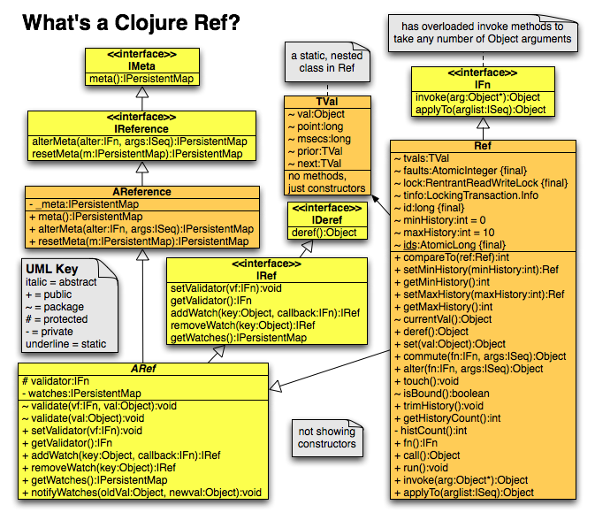
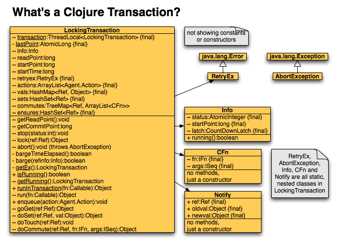

|
|
|
|
|
Writing software applications in which parts of the application run in concurrent threads introduces many challenges not present in single-threaded applications. Since the order of operations isn't fixed, failures can be difficult to repeat. Also, thoroughly testing the software requires more effort.
There are two general categories of multithreaded software. In one category the goal is to divide the work involved in processing a single "job" into pieces and run the pieces concurrently in order to complete the job sooner. In the other category the goal is to coordinate the execution of multiple "jobs", allowing them to execute concurrently so that as a group they complete sooner than if they were run serially. In both cases there can be contention over the data being accessed. However, the issue is perhaps more common and harder to avoid in the second category.
There are many models for creating concurrent software. The most popular today are based on locks, actors and transactional memory. This article briefly describes all three models and then dives deeper into software-based transactional memory (STM) [4].
The goals of this article are to:
Please send feedback on errors and ways to improve explanations to mark@ociweb.com. Updates to this article that indicate the "last updated" date and provide a dated list of changes will be provided at [1].
Lock-based concurrency provides a mechanism for threads to safely access shared memory. In its simplest form, exclusive ownership of a lock must be acquired before a given block of code is executed. This is used to ensure that only one thread at a time can execute the code. In object-oriented programming languages, often the lock is associated with an object that is accessed by code in the block. Sometimes multiple objects are accessed and a single lock object is designated to provide exclusive access to that group of objects.
Benefits of using lock-based concurrency include the following:
Issues with using lock-based concurrency include the following:
The actor model [3] is an alternative to shared memory concurrency, such as lock-based concurrency and transactional memory. Actors are software entities that execute as separate processes or light-weight threads. Rather than accessing shared memory, actors only use and retain data that is passed to them in asynchronous messages. When an actor receives a message, it can do the following things concurrently or in any order:
Benefits of using actor-based concurrency include the following:
Issues with using actor-based concurrency include the following:
The actor model is a central feature of the Erlang programming language. It is also supported by Scala and Haskell, but not Clojure [13].
For a more detailed description of actors, see http://en.wikipedia.org/wiki/Actor_model.
Transactional memory provides an alternative to lock-based and actor-based concurrency that simplifies writing applications in which concurrently running threads access shared memory.
The concept is similar to that of database transactions which provide ACID characteristics:
"Atomic" means that either all the changes in a transaction will be made successfully (commit) or none of them will be (rollback). "Consistent" means that all the data seen by a transaction at its start and end will be consistent. In other words, constraints on the data will not be violated. "Isolated" means that changes made inside a transaction are not visible outside the transaction until it commits. "Durable" means that after a transaction has committed, changes it made will not be lost, even if there is a network, hardware or software malfunction.
Transactions are demarcated in code by a special syntax that varies across implementations. From the perspective of other threads, all the memory changes made within a transaction appear to happen at the same moment when a transaction is finished committing. The changes are not visible to other threads before then. Transactions operate on a consistent snapshot of the memory. If any memory that is written within transaction "A" is modified and committed by transaction "B" before "A" commits, the code in "A" is rerun. These characteristics make transactional memory atomic, consistent and isolated. Note that transactional memory is not durable. If the software crashes or there is a hardware malfunction, data in memory is typically lost. When durability is required, using a relational database is often recommended.
Transactional memory is optimistic. Each transaction assumes it will be able to run its code without concurrently running threads changing the values it writes. When this assumption doesn't hold, the transaction discards all the work it has done and retries from the beginning. The possibility of retries makes it necessary to avoid any actions (side effects) that shouldn't be repeated or cannot be undone. This includes I/O operations. Clojure provides a solution for this that involves a combination of Refs and Agents. This is discussed later.
In descriptions of the retry process later, this article distinguishes between a "transaction" and a "transaction try". A transaction includes one or more transaction tries. A transaction that completes without having to retry runs a single transaction try. Otherwise there are more than one.
Transactional memory distinguishes between committed values of variables and in-transaction values. Inside a transaction, the value of a variable starts out as either its initial value or the last value committed by a transaction. When the value of a variable is modified inside a transaction, that change is only seen and used in the transaction. When the transaction commits, changes become visible to code outside the transaction.
Benefits of using transactional memory include the following:
Issues with using transactional memory include the following:
Transactional memory works best in programming languages that distinguish between mutable and immutable variables and require mutable variables to be mutated inside a transaction (like in Clojure and Haskell). Without these features, developers are on their honor to only modify mutable variables inside transactions. They must ensure that no data that requires coordinated changes is modified outside an STM transaction. This is similar to the issue with lock-based concurrency where developers are on their honor to acquire the correct lock(s) before accessing variables where this is expected.
Dan Grossman, an associate professor at the University of Washington,
wrote a paper titled
"The Transactional Memory / Garbage Collection Analogy"
[8].
The paper illustrates several ways in which
transactional memory (TM) is similar to garbage collection (GC).
Some quotes from a related presentation follow:
"Many used to think GC was too slow without hardware."
"Many used to think GC was about to take over, decades before it did."
"Many used to think we needed a back door for when GC was too approximate."
These same thoughts are often expressed about TM today.
Perhaps over time these thoughts will change in the same way
they have changed for GC.
Dan discusses this paper in
episode 68
of the "Software Engineering Radio" podcast [9].
Transactional memory can be implemented by hardware or software. This article focuses on software implementations which are commonly referred to as STM. STM is an integral part of some programming languages. For others, it is supported through add-on libraries.
One way programming languages avoid the issue of data being modified by concurrently running threads is by providing immutable data structures or collection classes. Clearly data that cannot change doesn't need to be protected. It is often desirable to be able to create new data structures that are similar to existing ones, for example, a list with a new item added at one end or a hash map with a new key/value pair added. Persistent data structures [14] provide a way to do this where new data structures share memory with existing ones. Using these saves both memory and time. The benefit of having immutable data structures that are not persistent is questionable since creating new ones from them is slow and can consume a large amount of memory.
Many STM implementations are listed in the STM Wikipedia entry [15]. Programming languages for which STM implementations exist include: C, C++, C#, Clojure, Common Lisp, Haskell, Java, MUMPS, OCaml, Perl 6, Python, Scheme and Smalltalk. For many of these languages there are multiple STM implementations from which to choose.
Just as there are many ways to implement garbage collection, there are many ways to implement STM. It is difficult to make general statements about the characteristics of STM implementations, such as memory usage and performance. The remainder of this article focuses on the Clojure implementation.
One aspect of the Clojure STM implementation that differs from many others is that data coordinated by transactions cannot be modified outside a transaction. With some implementations, developers are "on their honor" to use them correctly (for example, Deuce STM).
Clojure is a functional programming language that is a Lisp dialect and runs on the Java Virtual Machine (JVM). It was created by Rich Hickey. For a detailed discussion on Clojure, see my earlier article [2].
In Clojure all variables are immutable unless they refer to a reference object. There are four types of reference objects: Var, Atom, Agent and Ref. Each type is described below. For more detail, including sample code, see my earlier article.
Vars are variables that have
a root value that is shared between all threads
and can have thread-specific values.
The functions that modify the value of a Var include
def, set! and binding.
The value of a Var is obtained by directly referencing it,
as in other programming languages.
Vars are mainly used for constants.
In general, modifying the value of a Var is discouraged.
One use of Vars where modifying the value is seen as acceptable
is for configuration variables.
For example, if the special variable
*warn-on-reflection* is set to true,
Clojure will output warning messages whenever
it uses reflection to determine the type of an object.
This is useful while tuning an application for performance
as it provides guidance in determining where
adding optional type hints may help.
Atoms are variables that have a single value
that is shared across all threads.
They are accessed in an atomic way, so it is safe for
multiple threads to concurrently read and write them.
The functions that modify the value of an Atom include
reset!,
compare-and-set! and
swap!.
The value of an Atom is obtained by dereferencing it
using @var-name.
Agents are variables that, like Atoms, have a single value
that is shared across all threads.
They are modified asynchronously by invoking a function,
called an "action", in another thread.
The value returned by the action becomes the new value of the Agent.
The value of an Agent is obtained by dereferencing it
using @var-name
.
Actions sent to the same Agent are queued up so that
only one action at a time will be run per Agent.
The functions that queue an action are
send
and
send-off
.
They return immediately since
the specified action is executed asynchronously.
They differ only in the thread pool that is used.
One pool has a fixed size and the other has a variable size.
The action is is passed the current value of the Agent
and any other arguments that were passed to
send
or
send-off
.
The await function pauses the current thread
until all actions sent to a given set of Agents have completed.
The await-for function is similar,
but supports a timeout.
Actions sent to agents inside a transaction are held until after the transaction commits. This feature is sometimes used as a way to attach code that has side effects, such as I/O, to a transaction.
Refs are variables that, like Atoms and Agents, have a single value
that is shared across all threads.
They can only be modified inside an STM transaction.
The functions that modify the value of a Ref include
ref-set
,
alter
and
commute
.
The value of a Ref is obtained by dereferencing it
using @var-name.
In this article, when discussing Refs, the terms "read" and "dereference" are used synonymously. A transaction is not required in order to dereference a Ref, but one is needed to get a consistent snapshot when dereferencing multiple Refs.
Refs are the only type of variable in Clojure that is coordinated by STM. For this reason, they are the focus of this article.
The most direct way to change the value of a Ref
is to use the ref-set function.
It takes the Ref whose value is to be modified and the new value.
For both the
alter
and
commute
functions
the first argument is the Ref whose value is to be modified
and the second argument is a function that returns the new value.
When this function is invoked, it is passed
the current value of the Ref and
any additional arguments that were passed to
alter
or
commute
.
The return value becomes the new value of the Ref.
Using
alter
instead of
ref-set
is typically seen as more idiomatic. A conversation with the CIP
(Clojure Idiomatic Police) might go as follows:
CIP: Why did you use
ref-set
instead of
alter
?
You: Well, I already had the value I wanted to use for the Ref,
so I just passed it to
ref-set
.
CIP: Where did you get that value?
You: It was computed in a function I called.
CIP: Why didn't you just pass the Ref,
the function and its arguments to
alter
?
Don't be afraid to pass functions to functions.
This is encouraged in functional programming.
In most cases,
alter
is preferred over
commute
.
Using
commute
is only appropriate when
the order of changes to the Ref
made by concurrently running transactions doesn't matter.
This is related to the mathematical definition
of "commutative" which includes the phrases
"the result obtained ... does not differ with the order".
Choosing to use
commute
basically says
"I'm going to modify a Ref, but I don't care if another transaction
modifies it before I commit my change.
Decisions I make in this transaction based on my value of the Ref
will still be correct.
I want the value of the Ref to be recomputed when I'm ready to commit
based on the newest value of the Ref."
Some situations where
commute
makes sense include accumulating objects in a collection
and storing values calculated from a collection
(such as a minimum, maximum or average).
Suppose a collection is held in a Ref.
If two concurrent transactions add an object to the collection,
in many cases it doesn't matter which adds to it first.
There may be no reason for transaction "A" to retry
just because transaction "B" added to the collection
before "A" committed.
Suppose another Ref holds a value computed from the collection
such as the maximum value in it.
There may be no reason for transaction "A" to retry just because
transaction "B" committed a change to the maximum value.
It can be safely and correctly computed again based on
the latest contents of the collection.
When
ref-set
or
alter
is used and
another transaction has committed a change to the Ref
since the current transaction try began,
the current transaction will be retried.
When
commute
is used,
the current transaction will continue
and the in-transaction value of the Ref will be
passed to the function that is passed to
commute
.
This results in better performance because retries aren't required.
The functions and arguments passed to
commute
during a single transaction execution are saved in a sorted map.
The keys in the map are Ref objects and
the values are lists of objects
that describe the functions and their arguments.
The map is sorted based on the order in which
the Ref objects were created.
When the transaction is committing,
a write lock is acquired for each Ref in the map in sorted order
and all its commute functions are called a second time
to determine the Ref values that will be committed.
Obtaining the write locks in this sorted order prevents deadlocks
that might otherwise occur if multiple transactions
attempt to commit their changes at the same time.
The Ref values passed to the commute functions this time
depend on whether another transaction has committed
a new value since the current transaction try started.
If so then the newest committed values are used.
Otherwise, the in-transaction value is used.
This means the values passed to the commute functions
can differ from the values passed the first time they are called.
Within a transaction, a Ref cannot be set to a new value
using
ref-set
or
alter
after
commute
has been called on it.
Sometimes it is desirable to prevent other transactions
from changing the value of a Ref that will be
read by the current transaction,
or perhaps modified later in the current transaction.
(An example is preventing write skew
which is discussed later.)
This is achieved by calling
ensure
on the Ref.
While this guarantees that
no other transaction can modify the Ref,
it doesn't guarantee that
the current transaction will be able to modify it.
This is because any number of transactions can call
ensure
on the same Ref.
The following table is useful for selecting between Atoms, Agents and Refs when creating mutable variables. The word "coordinated" here means managed by a transaction.
| Uncoordinated | Coordinated | |
|---|---|---|
| Synchronous | Atom | Ref |
| Asynchronous | Agent | none |
Before diving into the implementation details of Clojure STM, it is important to have a basic understanding of some features of Clojure that are related to the implementation.
Validators are functions that are invoked
whenever the value of a given reference type object is being modified.
If the function determines that the change isn't "valid",
it can return false or
throw an exception to prevent the change from occurring.
Each reference type object can have only one validator function.
The
set-validator!
function assigns a validator function to a reference object.
There are two mechanisms for being notified when the value of a reference object may have changed, watch functions and watcher Agents.
Watch functions must take four arguments which are
an identifier "key", the reference object that may have changed,
its old value and its new value.
The key can be used to indicate the purpose of the watch
or it can be any data to be made available to the watch function
when it is invoked.
Each reference object being watched can have
a single watch function for each key value.
A watch function is registered with a reference object by calling
the
add-watch
function
which takes the reference object, a key and a watch function.
A watch function is removed from a reference object by calling the
remove-watch
function.
which takes a reference object and a key.
Watcher Agents are notified that a reference object has changed
by sending a given action to the Agent.
The action function is passed the current value of the Agent
and the reference object that changed, but not the old value.
A watcher Agent is registered with a reference object by calling
the
add-watcher
function
which takes a reference object,
a send type (which identifies the thread pool to be used),
an Agent, and the action function to be sent.
The
add-watcher
function
creates an anonymous function that
sends the action to the Agent and
registers that with the reference object by passing it to
the
add-watch
function.
The Agent is used as the key.
A watcher Agent is removed from a reference object by calling the
remove-watcher
function which takes the reference object and the Agent.
This section describes the current Clojure STM implementation at a high level. Low level details are provided later in this article. The information is accurate as of Clojure 1.0 (git commit 94c4a6a on 8/3/2009), but is subject to change in the future. This article should not be viewed as a specification for Clojure STM.
It should be emphasized that understanding the details of the Clojure STM implementation is NOT required in order to use it successfully. Still, there are many reasons (listed in the goals of this article) that one might be interested in the details.
Currently Clojure is implemented by a combination of Java and Clojure source code. Nearly all the STM implementation is written in Java. An effort is underway to dramatically increase the amount that is implemented in Clojure. When that effort is complete, most or all of the code described in this and the next section will be discarded. It seems reasonable to speculate that the STM mechanisms will remain similar.
My intention is to update this article whenever the Clojure STM implementation changes so it remains an accurate source of information that is easier to digest than simply reading the source code.
The Clojure STM implementation is based on multi-version concurrency control (MVCC) [16] and snapshot isolation [17]. The main difference between the standard definition of these concepts and the Clojure implementation is that Clojure works with in-memory values of variables instead of database tables, rows and columns. Wikipedia describes these concepts very well as follows. Parts related to databases are in square brackets. My clarifiations are in non-italic text.
"MVCC uses timestamps or increasing transaction IDs to achieve serializability. MVCC ensures a transaction never has to wait for a [database] object by maintaining several versions of an object. Each version would have a write timestamp and it would let a transaction read the most recent version of an object which precedes the transaction timestamp."
"If a transaction (Ti) wants to write to an object, and if there is another transaction (Tk) (that also wants to write it), the timestamp of Ti must precede the timestamp of Tk for the object write operation to succeed. Which is to say a write cannot complete if there are outstanding transactions with an earlier timestamp."
"Every object would also have a read timestamp, and if a transaction Ti wanted to write to object P, and the timestamp of that transaction is earlier than the object's read timestamp, the transaction Ti is aborted and restarted. Otherwise, Ti creates a new version of P and sets the read/write timestamps of P to the timestamp of the transaction." (The Clojure STM implementation does not use read timestamps.)
"The obvious drawback to this system is the cost of storing multiple versions of objects [in the database]. On the other hand reads are never blocked, which can be important for workloads mostly involving reading values [from the database]. MVCC is particularly adept at implementing true snapshot isolation, something which other methods of concurrency control frequently do either incompletely or with high performance costs."
"A transaction executing under snapshot isolation appears to operate on a personal snapshot [of the database], taken at the start of the transaction. When the transaction concludes, it will successfully commit only if the values updated by the transaction have not been changed externally since the snapshot was taken."
An issue with snapshot isolation is that it allows write skew . This happens when concurrent transactions read common sets of data and make changes to different data within that set and there are constraints on the data.
For example, suppose a town places a restriction (constraint) on the total number of dogs and cats that a family can own. Let's say the limit is three. When a person obtains a new dog or cat, they are entered in a database. John and his wife Mary have one dog and one cat. John adopts another dog while at the same time Mary adopts a cat. These transactions occur concurrently. Remember that transactions only see changes made by other transactions that have committed. John's transaction attempts to modify the number of dogs they own. The constraint isn't violated because they now have a total of three. Mary's transaction attempts to modify the number of cats they own. Like in the other transaction, the constraint isn't violated because they now have a total of three. Both transactions are allowed to commit, resulting in a total of four dogs and cats which violates the constraint. This is permitted because neither transaction attempts to commit a change to data that is being modified by another concurrent transaction.
Clojure provides a mechanism for avoiding write skew.
See the
ensure
function
discussed later.
The Clojure STM implementation uses locks and a lock-free strategy. In almost all cases, locks are released soon after they are acquired, rather than being held for the duration of a transaction. A lock-free strategy is used to mark Refs that have been modified in a transaction. Details behind the use of locks and the lock-free strategy are provided later.
In Clojure an STM transaction is created by
passing any number of expressions, called the body,
to the
dosync
macro
(defined in src/clj/clojure/core.clj).
This greatly simplifies coding for concurrency
over using explicit locks.
It is not necessary to indicate which Refs
might be modified in the transaction.
However, developers still need to make good decisions
about what code should be inside it a
dosync
call,
based on the set of Refs that need to be in a consistent state
while the body executes.
The current Clojure STM implementation utilizes several Java concurrency classes. These include:
java.util.concurrent.AtomicInteger
java.util.concurrent.AtomicLong
java.util.concurrent.Callable
java.util.concurrent.CountDownLatch
java.util.concurrent.TimeUnit
java.util.concurrent.locks.ReentrantReadWriteLock
The main classes in the Clojure STM implementation are
LockingTransaction and Ref,
both in the clojure.lang package.
Both are located in the src/jvm/clojure/lang directory.
UML class diagrams showing the attributes and methods of
those classes and related classes appear below.
It will be useful to refer to these diagrams often
while reading the remainder of this article.


The
dosync
macro call
that wraps each transaction body
calls the
sync
macro which calls
the LockingTransaction static method
runInTransaction
.
The
sync
macro
passes body of the transaction
to
runInTransaction
as an anonymous function.
Each thread has one LockingTransaction object,
maintained as a
ThreadLocal
variable.
If a LockingTransaction object hasn't yet been created
for the current thread then one is created.
If the current thread is already running a transaction
then the anonymous function is called inside it,
i.e., transactions compose.
Otherwise a new transaction is started
and the function is called inside it.
The status of a transaction is always one of the following five values:
The meaning of each of these status values is self evident, except perhaps RETRY and KILLED.
When the status is RETRY, the transaction will attempt a retry
but hasn't started the next try yet.
When that occurs, the status changes to RUNNING.
There are two situations that cause the status of a transaction
to be set to KILLED.
The first is when the
abort
method
is called on a transaction.
That sets the status to KILLED and
throws an AbortException
which causes the transaction to stop without retrying.
(In the current version of Clojure, no code calls
abort
.)
The second is when the
barge
method
(see the section "Barging" below)
is called on a transaction.
That sets the status to KILLED and
allows the transaction to retry.
Each Ref object maintains a chain of its
committed values (history) in its
tvals
field.
The length of the chain is controlled by the fields
minHistory
and
maxHistory
.
These default to zero and ten, respectively,
but can differ for each Ref object.
Other values can be specified when Refs are created
by passing options to the ref function.
They can also be modified using the
ref-min-history
and
ref-max-history
functions.
See the section "Faults" below
to learn why the chain length matters.
Each Ref object has a
ReentrantReadWriteLock
.
Any number of concurrent transactions can hold its read lock
OR a single transaction can hold its write lock.
The only time one of these locks is held for the duration
of a transaction is when ensure is called on a Ref.
In that case the transaction will hold the read lock until
either the Ref is modified in the transaction
or the transaction commits.
There is no circumstance under which a write lock
will be held for the duration of a transaction.
Write locks are obtained only briefly
when certain things occur during a transaction
and then quickly released.
They are acquired again when the transaction commits
and then released when the commit completes.
For more details on how these
ReentrantReadWriteLock
s
are used, see the "Clojure STM - Low Level" section
which describes the
lock field
in Ref class.
Calling
ref-set
or
alter
on a Ref
gives it an in-transaction value that
isn't seen by other transactions until the transaction commits.
This also sets the
tinfo
field
of the Ref to refer to an object that
describes the transaction that modified the Ref,
including the order in which it started relative to others
and its current status.
This is how one transaction knows that another one has modified a Ref
and hasn't yet committed.
Think of this like giving the Ref a ticket
for admission into the commit party that will hopefully happen later.
A Ref cannot have a ticket for more than one of these parties.
For more details on how
the
tinfo
field of a Ref is set,
see the "Clojure STM - Low Level" section which describes
the
lock
method
in the LockingTransaction class.
Each LockingTransaction object maintains a map of
in-transaction values for the Refs it has modified
in its
vals
field.
The keys in this map are Ref objects and
the values are the java.lang.Object values of the Refs.
If a Ref is only read inside a transaction,
its value is always retrieved from
the
tvals
chain.
This requires walking the chain to find the newest value
that was committed before the current transaction started.
This can make it inefficient to dereference a Ref multiple times
in a transaction unless it is modified before the second dereference.
The first time a Ref is modified in transaction, its new value is
placed in the
vals
map.
For the remainder of the transaction,
its value is retrieved from the
vals
map.
A "fault" occurs when there is an attempt to read the value of a Ref
inside a transaction, but the Ref has no in-transaction value and
all the values in its chain of committed values
were committed after the current transaction began.
This can happen when other transactions have
committed a change to the Ref
since the current transaction try began.
When a fault occurs, the transaction will retry.
When a transaction commits a change to a Ref
that has experienced a fault in another transaction
AND the chain is shorter than
maxHistory
,
a new node is added to the chain of committed values for the Ref.
This also happens if the chain is
shorter than
minHistory
.
Lengthing the chain reduces the likelihood that
another fault will occur for the Ref in the future.
If no fault has occurred for Ref, instead of adding a new node,
the last node in the chain becomes the first
and it is modified to describe the newly committed value.
It should be clear from the discussion above that
the length of the history chain for each Ref can differ.
The chains adapt based on the faults that occur.
If a fault never occurs for a given Ref
and it has a
minHistory
of zero (the default)
then the length of its chain will never exceed one.
These chains never become shorter.
After a fault causes a chain to grow,
it either remains at that length or
grows even longer when more faults occur.
The term "barge" is used to describe the process of
determining whether a given transaction should retry
while the current transaction continues.
When one transaction attempts to
barge
another,
it will only succeed if three conditions are met.
First, the transaction doing the barge must have been
running for at least 1/100th of a second
(see the BARGE_WAIT_NANOS constant).
Second, this transaction must have started
before the transaction to be barged.
This means older transactions are favored over newer ones.
Third, the status of the other transaction must be
RUNNING and must be successfully changed to KILLED.
The check of the transaction status and changing it
are done atomically.
The last condition means that if the other transaction
is in the process of committing (status = COMMITTING) its changes,
it will not be barged.
When a transaction retries, all the in-transaction changes it has made to Refs are discarded and execution returns to the beginning of the transaction body. There are many scenarios that can cause a transaction to retry. Each is described below.
ref-set
or
alter
function
is called on a Ref.
This causes an attempt to "lock" the Ref,
but one of the following situations occur:
barge
the other transaction fails.
ref-set
,
alter
,
commute
or
ensure
function
is called on a Ref,
but another transaction has barged the current one
(status isn't RUNNING).
barge
it fails.
A transaction won't retry indefinitely.
There is a limit that is specified by the
RETRY_LIMIT constant
in the LockingTransaction class.
It is currently set to 10,000.
This is used in the retry loop inside
the
run
method
in the LockingTransaction class.
If it is exceeded then a generic Exception object
is thrown.
Retries are triggered by throwing a
RetryEx
which is a custom subclass of java.lang.Error
defined in LockingTransaction.java.
It extends Error instead of Exception
so that it won't be caught by user code
that simply catches Exception.
This is important since the code in a transaction
can catch a generic Exception
and can call Java code that does so.
The retry loop contains a try block
with a catch for
RetryEx
.
The catch simply allows execution to return to the top of the loop.
No other kinds of exceptions are caught,
so they cause the retry loop to exit.
An IllegalStateException is thrown from many
methods in the Clojure implementation.
When thrown inside a transaction, the transaction will not retry.
Those related to STM are thrown when the following occur:
LockingTransaction
for the current thread, but it hasn't been created yet
or it isn't running.
This happens when any of the following functions
are called outside a transaction:
ref-set
,
alter
,
commute
or
ensure
.
ref-set
or
alter
,
but the
commute
function
has already been called on the Ref in the current transaction.The Clojure STM implementation guarantees that deadlocks, livelocks and race conditions will not occur.
In the context of multithreaded software applications, these terms can be described as follows. A deadlock occurs when concurrently running threads cannot proceed because they are each waiting on a resource for which another has acquired exclusive access. A livelock occurs when concurrently running threads are performing work (as opposed to be being blocked, waiting on resources), but cannot complete due to something that other threads have done or not done. A race condition occurs when the outcome of a thread is wrong due to the timing of changes to shared state made by another concurrently running thread.
In Clojure STM, this applies to modifying a Ref within a transaction.
Suppose transactions A and B start in that order
and are running concurrently.
If they both attempt to modify the same Ref
using
ref-set
or
alter
(write conflict),
preference is given to transaction A
because it has been running the longest
(provided it has been running for a minimal amount of time).
This avoids livelock that might occur if retries were
based on the order in which refs are set.
Transaction B will retry, possibly multiple times,
and will be able to modify the Ref
after transaction A commits its changes.
When transaction B finally runs to completion,
it will do so with a consistent view
of the changes committed by transaction A.
When transactions modify Refs using
commute
,
no write conflicts occurs.
Deadlocks are avoided during the commit by
obtaining write locks for the Refs in a consistent order
(which is the order in which
the Ref objects were created).
Using STM instead of explicit locks adds processing overhead. This doesn't necessarily mean that the STM approach is slower. Since STM is optimistic and locks are pessimistic, it is possible for STM to provide better overall performance for some applications due to greater concurrency.
When a Ref that has not yet been modified inside a transaction is read inside the transaction, a value is selected from its chain of committed values. As long as no other transaction has committed a new value for the Ref since the current transaction began, this will be fast since the value used will be that of the first node in the chain. Otherwise some chain walking will take place.
The value of a Ref can only be modified inside a transaction.
When this is done, there is overhead incurred to
verify that a transaction is running.
It also must verify that the
commute
function
hasn't already been called on the Ref.
(It wouldn't make sense to allow this because
commute functions are called a second time during the commit
and any other setting of the Ref wouldn't have any lasting effect
after the transaction completes.)
If this is the first time the Ref has been
modified in the current transaction,
there is overhead incurred in adding the Ref
to a set of Refs that the transaction has modified and
marking the Ref as being modified by the current transaction
(see the description of the lock method
in the next paragraph).
Finally, the new value is added to the map of in-transaction values
for the current transaction.
Subsequent reads of the Ref inside the transaction
will use the value from that map instead of selecting
a value from the chain of committed values.
The
lock
method
in the LockingTransaction class introduces overhead.
This involves many steps that are summarized below:
ensure
was called
earlier in this transaction try on the Ref
then release the read lock for the Ref.
barge
it.
If that fails then trigger a retry for the current transaction.
tinfo
field
to refer to an
Info
object
that describes the current transaction.When the end of the transaction is reached, there is overhead incurred in committing the modified Refs, which makes their new, in-transaction values visible outside the current transaction. This involves many steps that are summarized below:
RUNNING to COMMITTING.commute functions
called on Refs in the transaction.
This involves acquiring a write lock for each commuted Ref.
minHistory
and
maxHistory
).Notify object for each Ref that was modified
and has at least one registered watcher.COMMITTING to COMMITTED.
ensure
.locked (local),
ensures
,
vals
,
sets
and
commutes
collections in preparation for the next retry
or new transaction in the current thread.Notify objects
and dispatch all actions sent to Agents in the transaction.notify (local) and
actions
collections in preparation for the next retry
or new transaction in the current thread.It is not necessary to learn the details presented in this section in order to effectively use Clojure STM. However, this information will be very useful to anyone that wishes to:
Feel free to skip to the "Conclusion" section near the end if you don't have a need for additional detail.
While reading about the low-level details
of the Clojure STM implementation,
refer to the earlier class diagrams to aid with
understanding the relationships between
the many related classes and interfaces.
It is also helpful to look at the source code in
core.clj, ARef.java, Ref.java
and LockingTransaction.java while reading this section.
These macros are defined in src/clj/clojure/core.clj.
| Name | Description |
|---|---|
| dosync |
This macro accepts any number of expressions.
It simply passes them to the
sync
macro
which is defined in the same source file.
|
| sync |
This macro accepts any number of expressions.
It runs them inside a transaction.
If it is called in the context of an existing transaction,
the expressions are run inside it.
Otherwise a new transaction is started.
It wraps the expressions in an anonymous function that implements the
Callable
interface and passes that to
the static Java method
runInTransaction
in the clojure.lang.LockingTransaction class.
|
These functions are defined in src/clj/clojure/core.clj.
The
alter
,
commute
,
ensure
and
ref-set
functions must be called inside a transaction,
i.e., inside a call to the
dosync
macro.
When the phrase "in-transaction value" is used below it means
either the in-transaction value if there is one
or the newest committed value before the transaction try began.
| Name | Description |
|---|---|
| add-watch |
This function takes a reference object, a key and a function.
It registers the function under the key for the reference object.
When the value of the reference object changes,
the function is invoked with the key,
the reference object, the old value and the new value.
This calls the
addWatch
method on the Ref.
|
| add-watcher |
This function takes a reference object,
a send type (which identifies the thread pool to be used),
an Agent and the action function to be sent.
It creates an anonymous function that
sends the action to the Agent and
registers that with the reference object by passing it to
the
add-watch
function.
The Agent is used as the key.
|
| alter |
This function takes a Ref,
a function that will return its new value,
and optional, additional arguments.
It changes the value of a Ref to
the result of invoking the given function on
the in-transaction value of the Ref
and any additional arguments.
This calls the
alter
method
on the Ref object,
which invokes the given function and
passes the Ref and the function return value
to the
doSet
method
on the LockingTransaction object
for the current thread.
If another transaction has modified the same Ref
then this transaction may retry
(see the lock method).
Otherwise, the new value is returned.
|
| commute |
This function is similar to
alter
and takes the same arguments, but differs in two ways.
First, commute doesn't care if other transactions
have committed changes to the Ref it is going to modify
since the current transaction try began.
Whereas
alter
will retry,
commute will proceed.
Second, when the transaction is committing its changes, all the calls to commute functions are rerun. They aren't necessarily run in the same order in which they were invoked within the transaction body. In all calls to the commute functions, both in the body of the transaction and during the commit, the Ref value passed to the given function is determined in the same way. If
ref-set
or
alter
was called on the same Ref earlier in the transaction
then the in-transaction value of the Ref is used.
Otherwise, the newest committed value of the Ref is used.
Note that the newest committed value may be
the result of a transaction that committed
since the current transaction try began.
This means that commute functions invoked
during the commit can be passed different Ref values
than they were passed when invoked in the transaction body.
This calls the
commute
method on the Ref.
|
| ensure |
This function takes a Ref.
It prevents other transactions from
setting an in-transaction value for the Ref,
which also prevents them from committing a new value.
This can be used to avoid write skew.
It also helps avoid retries due to write conflicts on the Ref.
The current transaction will be able to
set a new value for the Ref later in the transaction
as long as other transactions haven't called
ensure
on the same Ref.
This calls the
touch
method on the Ref which passes the Ref object
to the
doEnsure
method
of the LockingTransaction object
for the current thread.
That acquires a read lock for the Ref which is
held until the transaction commits or until the Ref is set with
ref-set
or
alter
later in the transaction try.
|
| ref |
This function creates and returns a Ref object
which is a mutable reference to an immutable object.
It takes the initial value as an argument.
It also accepts options that include
specifying a validator function and
controlling the length of the history chain for this Ref.
See the output of (doc ref)
for more information on options.
This calls a constructor in the Ref class.
|
| ref-history-count |
This function takes a Ref.
It returns the current length of its history chain.
This calls the
getHistoryCount
method on the Ref.
|
| ref-max-history |
This function takes a Ref and an optional length.
If only a Ref is provided,
it returns the maximum length of the history chain for the Ref.
If a length is also provided,
it sets the maximum length and returns it.
If the history chain is already longer than the specified length,
it is not shortened to the new maximum length.
It just won't grow any longer.
This calls the getMaxHistory and
setMaxHistory methods on the Ref.
|
| ref-min-history |
This function takes a Ref and an optional length.
If only a Ref is provided,
it returns the minimum length of the history chain for the Ref.
If a length is also provided,
it sets the minimum length and returns it.
This calls the getMinHistory and
setMinHistory methods on the Ref.
|
| ref-set |
This function takes a Ref and a proposed new value.
It changes the value of a Ref to the given value.
This passes the value to the
set
method
on the Ref object,
which calls the
doSet
method
on the current LockingTransaction object.
If another transaction has modified the same Ref
then this transaction may retry
(see the lock method).
Otherwise, the new value is returned.
|
| remove-watch |
This function takes a reference object and a key.
It removes the watch function associated with the given key
from the map of watch functions for the reference object.
This calls the
removeWatch
method on the Ref.
|
| remove-watcher | This function takes a reference object and a watcher Agent. It removes the watch function with a key that matches the Agent from the map of watch functions for the reference object. |
| send |
This function takes an Agent, a function and optional arguments.
It passes the function and optional arguments,
along with a final argument of false,
to the dispatch method of the Agent.
The false argument causes
a fixed-size thread pool to be used.
|
| send-off |
Like
send
,
this function takes an Agent, a function and optional arguments.
It passes the function and optional arguments,
along with a final argument of true,
to the dispatch method of the Agent.
The true argument causes
a variable-size thread pool to be used.
|
| set-validator! |
This function takes a Ref and a function.
It sets the validator function for the Ref
to the given function.
This calls the
setValidator
method on the Ref.
|
The ARef class is defined in
src/jvm/clojure/lang/ARef.java.
It is the superclass of the Ref class.
| Name | Description |
|---|---|
| validator:IFn | This is the single validator function associated with this Ref. |
| watches:IPersistentMap | This is a map of watch functions, one per key value, for this Ref. |
| Name | Description |
|---|---|
| addWatch |
This method takes an Object key
and an IFn function.
It registers the function under the key
in the
watches
map.
|
| getValidator | This method gets the validator function for this Ref. |
| getWatches | This method gets the map of watch functions for this Ref. |
| notifyWatches | This method takes old and new values of the Ref. It invokes all the watch functions for the Ref, passing them their key, this Ref, the old value and the new value. |
| removeWatch |
This method takes an Object key
and removes the watch function for the given key
from this Ref.
|
| setValidator |
This method takes an IFn function.
It sets the validator function for this Ref
to the given function.
|
| validate |
This method takes a proposed new Object value
for this Ref and determines whether it is valid.
If not, an expection is thrown which
prevents the Ref from taking on the new value.
|
The Ref class is defined in
src/jvm/clojure/lang/Ref.java.
It is a subclass of the ARef class.
One static nested class is defined inside
the clojure.lang.Ref class.
| Name | Description |
|---|---|
| TVal |
Objects from this class are
POJOs that
represent versions of values for Refs.
They are nodes in a doubly-linked, circular list.
The fields of this class are all package-level
so they can be accessed directly by the
Ref and LockingTransaction classes
that are in the same package.
This class has two constructors and no methods.
|
| Name | Description |
|---|---|
| msecs:long | This is the creation system time of this object. |
| next:TVal |
This is a reference to the
TVal
object that
describes the next newer committed version of the Ref
or the end of the chain if this is the first node in it.
|
| point:long | This is an ordered identifier of a transaction commit. Values that were committed in the same transaction will have the same value for this field. |
| prior:TVal |
This is a reference to the
TVal
object that
describes the next older committed version of the Ref
or the beginning of the chain if this is the last node in it.
|
| val:Object | This is a committed value for the Ref. |
All fields in the Ref class are package level,
so LockingTransaction objects can directly access them.
| Name | Description |
|---|---|
| faults:AtomicInteger (final) |
This field is used to count the number of times a transaction
has attempted to retrieve the value of this Ref
from its history chain,
but found no value known before
the read point
which is an ordered identifier for
the beginning of the current transaction try.
This can happen if other transactions
have committed new values for the Ref
since the current try of the current transaction began.
Transactions that encounter this situation will retry.
This field is reset to zero in the
run
method
of LockingTransaction
after a new node is added to the history chain for the Ref
(see the description of the
fourth commit step
in the
run
method later).
|
| id:long (final) |
This field holds a unique, ordered identifier for the Ref.
Its value is assigned in the Ref constructor by calling
getAndIncrement on the ids field.
|
| ids:AtomicLong (static, final) |
This field is used to assign a unique identifier
to each Ref object.
|
|
lock: ReentrantReadWriteLock (final) |
This field maintains a pair of locks,
one for readers and one for writers.
Only one thread at a time can hold the write lock.
When the write lock is held, no thread can hold the read lock.
Otherwise any number of threads can hold the read lock.
Being "reentrant" means that if a thread holds a lock
and requests it again, perhaps through a recursive call,
the request will succeed (since it already owns the lock)
and execution will continue.
The
java.util.concurrent.locks.ReentrantReadWriteLock
class implements the
java.util.concurrent.locks.ReadWriteLock
interface.
The javadoc for
ReadWriteLock
is a good source for more information.
The Ref methods
currentVal
and
isBound
acquire a read lock and release it before they return.
These methods have a brief runtime.
The Ref methods
trimHistory
and
getHistoryCount
acquire a write lock and release it before they return.
These methods have a brief runtime.
The LockingTransaction method
doEnsure
acquires a read lock,
but doesn't release it before returning unless
another transaction has modified the Ref and is still running.
In that case the current transaction will retry.
The LockingTransaction method
releaseIfEnsured
(called by the
lock
and
run
methods)
releases a read lock acquired by
the
doEnsure
method.
This method and the
lock
method
have a brief runtime.
The
run
method
runs for the duration of a transaction.
The only locks it may hold for a long period of time
are read locks that are acquired
by calling
ensure
on a Ref.
The LockingTransaction methods
doGet
and
doCommute
acquire a read lock and release it before they return.
The
doGet
method
has a brief runtime.
The
doCommute
method
may not have a brief runtime,
but the amount of time for which it holds a read lock is brief.
It is only held while getting the newest committed value
for a Ref, not while the commute function runs.
The LockingTransaction method
tryWriteLock
attempts to acquire a write lock.
This is called by the
lock
and
run
methods
which both release the lock before completing.
The
lock
method
has a brief runtime.
The
run
method
only acquires write locks
when a transaction is committing.
This may not be brief since during this time
commute functions are rerun and
validator functions are run.
The write locks are released before watchers are notified
and Agent actions are dispatched.
No other methods use the read and write locks for Ref objects.
|
|
minHistory:int maxHistory:int |
These fields are used to limit the number of
historical values that are retained for the Ref.
They default to zero and ten, respectively.
Details on how these values are used is provided later
in the description of
the
run
method
in LockingTransaction.
|
|
tinfo: LockingTransaction.Info |
This field holds the status of the transaction that has made an uncommitted change to the value of this Ref, but hasn't yet committed the change. When not null, it serves as an indication that the Ref has an active writer. |
| tvals:TVal |
This field holds the newest node in a circular chain of
TVal
objects
that each hold a historical value of the Ref
that has been committed, not an in-transaction value.
Collectively these are referred to in this article as
the "history chain".
The number of values retained is controlled by the values of
the
minHistory
and
maxHistory
fields
which were described above.
When a Ref object is created,
its tvals field is set to
a
TVal
object
that describes its initial value,
not associated with any transaction.
Additional
TVal
objects
are created in the
run method of LockingTransaction
during a commit.
TVal
objects are used in the
doCommute
,
doGet
,
lock
and
run
methods of that class.
|
| validator:IFn |
This field represents a Clojure function that will be invoked
whenever the value of the Ref is about to be modified.
A reference object can have only one validator function at a time.
The validator function should return a value that
can be cast to a boolean whose value
indicates whether the current value of the Ref is valid.
Alternatively, it can throw an exception
if the value is not valid.
Returning false or throwing an exception
prevents the change from taking place and
causes an IllegalStateException to be thrown.
The
setValidator
method
sets this field and immediately calls the validator function
to validate the current value of the Ref.
The
getValidator
method
returns the validator function as a IFn.
|
|
watches: IPersistentMap |
This field holds a map of functions that are called
after a change to a Ref has been committed.
See the earlier section
"Clojure Validators and Watchers"
for information on registering watchers with a reference object.
After the
run
method in
LockingTransaction commits a transaction,
it calls the notifyWatches method
on each Ref that was modified.
The
notifyWatches
method invokes each watch function registered with the Ref,
passing it the key, the Ref, its old value and its new value.
|
The methods in the Ref class
that play a significant role in the STM implementation
are described below.
| Name | Description |
|---|---|
| constructors |
This class has two constructors.
One takes only an initial value
as a java.lang.Object for the Ref.
The other takes that and a map of options.
|
| alter |
This method takes a function
whose return value will become the new value of the Ref,
and optional arguments to be passed to the function
after the in-transaction value of the Ref.
It gets the value of the Ref by
calling the
doGet
method on the
LockingTransaction object for the current thread.
See the description of that method below
for details on how the value is obtained.
Next, it invokes the given function, passing it
the Ref value and any additional arguments that were supplied.
Finally, it calls the
doSet
method on the
LockingTransaction object for the current thread,
passing it the Ref object and
the return value from the given function.
See the description of the
doSet
method later
for details on why it may trigger a retry.
|
| commute |
This method takes a function
whose return value will become the new value of the Ref,
and optional arguments to be passed to the function
after the current value of the Ref.
It simply passes all its parameters to the
doCommute
method
on the LockingTransaction object
for the current thread.
|
| currentVal |
This method returns the newest committed value of the Ref.
First, it obtains a read lock for the Ref.
Next, it accesses the value of the first
TVal object
in the history chain for the Ref.
If that chain is empty, meaning the Ref is unbound,
an IllegalStateException is thrown.
Finally, the read lock is released.
This method is called by the
deref
method
in the same class.
|
| deref |
This method returns the current value of the Ref.
If the current thread is in a transaction
then it calls the
doGet
method
on the LockingTransaction object
for the current thread to get the value.
Otherwise it calls the
currentVal
method
in the same class.
|
| getHistoryCount |
This method acquires the write lock
(probably a read lock would suffice)
for the Ref (blocking until successful),
calls the
histCount
method,
returns what it returns and releases the write lock.
It acquires a write lock instead of a read lock
because it walks the history chain to get the count
and needs to prevent other threads from modifying the chain
while it does this.
This is called by the
ref-history-count
function.
|
| histCount |
This method returns the number of
TVal
objects
associated with the Ref,
which is the length of the history chain.
|
| isBound |
This method returns a boolean that indicates whether there is
at least one
TVal
object
in the history chain for this Ref.
Before checking for this, a read lock is obtained for the Ref.
Before returning, the read lock is released.
|
| set |
This method takes a proposed new value for the Ref.
It simply passes the Ref and the new value to the
doSet
method
on the LockingTransaction object
for the current thread.
|
| touch |
This method simply passes the Ref to the
doEnsure
method on the
LockingTransaction object for the current thread.
It is called by the
ensure
function in order to
prevent other transactions from changing this Ref.
|
| trimHistory |
This method removes all the but newest
TVal
object
from the history chain.
Before doing this, a write lock for the Ref is obtained.
Before returning, the write lock is released.
No code in the current version of Clojure calls this method.
|
The LockingTransaction class is defined in
src/jvm/clojure/lang/LockingTransaction.java.
| Name | Description |
|---|---|
| BARGE_WAIT_NANOS | This specifies the minimum amount of time (1/100th of a second) that a transaction must have run in order for it to attempt to cause another conflicting transaction to retry. |
| LOCK_WAIT_MSECS |
This specifies the amount of time (1/10th of a second)
to wait for something to happen.
It is used by the
tryWriteLock
method
to limit how long it waits to obtain a write lock for a given Ref.
It is also used by the
lock
method
to limit how long it waits for
the
latch
in an
Info
object
associated with a given Ref to be decremented to zero.
|
| RETRY_LIMIT |
This specifies the maximum number of times
a transaction will be retried before giving up.
The current value is 10,000.
If it gives up then a plain java.lang.Exception
is thrown.
This happens in the
run
method.
|
|
RUNNING COMMITTING RETRY KILLED COMMITTED |
These describe the status of a transaction.
Three of these have an obvious meaning.
RETRY is the status of a transaction that is
going to retry, but hasn't started the next try yet.
KILLED is the status of a transaction that
was stopped by another, conflicting transaction.
The transaction will retry,
and have its status changed to RETRY,
unless an exception is also thrown
(which is done in the
abort
method).
|
These are static nested classes defined inside
the LockingTransaction class.
| Name | Description |
|---|---|
| AbortException |
This is a simple subclass of java.lang.Exception
that is thrown in the abort method.
No code in the current version of Clojure calls that method,
so this class isn't currently used.
|
| CFn |
Objects from this class hold
a reference to a function (IFn) and
a sequence of arguments to be passed to it (ISeq).
They are used to store information about commute functions
so they can be invoked a second time
when a transaction is being committed.
|
| Info |
Objects from this class describe the status of a transaction.
A new one is created at the beginning of each transaction try.
The class has a single method, running,
that returns a boolean indicating whether
the transaction currently has a state of
RUNNING or COMMITTING.
|
| Notify | This class has three fields, one to hold a Ref that changed, one to hold its previous value, and one to hold its new value. An instance is created and added to a list during a transaction commit for each Ref that was modified during the transaction. After the transaction is committed, the information in these objects is used to notify the watchers of the Refs about the changes. |
| RetryEx |
This is a simple subclass of java.lang.Error.
Only one instance of this class is created per thread.
It is held in the
retryex
field of the single LockingTransaction object
that is created for each thread.
This object is thrown whenever a transaction needs to retry.
The fact that it extends Error instead of Exception
indicates that your code should not catch this.
The Clojure STM implementation catches it in the retry loop
of the
run
method.
Since the done flag isn't set to true,
the loop continues with another try of the transaction.
|
| Name | Description |
|---|---|
| fn:IFn (final) |
This is a reference to a function that was passed to
the
commute
function.
|
| args:ISeq (final) |
This is a list of arguments to be passed to the function. |
| Name | Description |
|---|---|
|
latch: java.util.concurrent.CountDownLatch (final) |
This latch object is created in the constructor
of the
Info
class
with a value of one.
It is decremented by the stop method
in LockingTransaction.
The
blockAndBail
method
waits (with a timeout) for it to reach zero
before triggering a retry of the current transaction.
The
barge
method
also waits for it to reach zero so it knows that
the transaction it is barging has been stopped.
|
|
status: java.util.concurrent.AtomicInteger (final) |
This holds the current status of the associated transaction. |
|
startPoint:long (final) |
This value identifies the order in which the associated transaction started, relative to other transaction starts, retries and commits. |
| Name | Description |
|---|---|
| ref:Ref (final) |
This is a Ref that was modified in a transaction. |
| oldval:Object (final) |
This is the previous value of the Ref. |
| newval:Object (final) |
This is the new value of the Ref. |
All fields in the LockingTransaction class
are package level. However, in the current version of Clojure
no other classes extend LockingTransaction
and no other classes in the same package directly access its fields.
| Name | Description |
|---|---|
|
actions: ArrayList<Agent.Action> (final) |
This field is a collection of Agent actions.
When actions are sent to Agents within a transaction,
they are saved in this collection
(by the
enqueue
method)
and not actually sent until the transaction commits.
This is sometimes used to execute code that has side effects
in order to prevent the side effects from occurring multiple times
due to transaction retries.
The
send
and
send-off
functions
that send actions to Agents
both call the dispatch method
in the Agent class.
That calls the dispatchAction method
in the Agent class
which checks for a running transaction in the current thread.
If one is running, it passes the action to the
enqueue
method
in the LockingTransaction class.
|
|
commutes: TreeMap <Ref, ArrayList<CFn>> (final) |
This field is a map from Refs to the commute functions
that have been called on them.
CFn is a static, nested class whose objects
hold a reference to a Clojure function and
a sequence of arguments to be passed to it.
When the transaction is ready to commit,
all the commute functions are reexecuted
to compute the Ref values that will be committed.
|
|
ensures:HashSet<Ref> (final) |
This field holds the set of Refs on which the
ensure
function
has been called in the current transaction try.
It is accessed in the following
LockingTransaction methods:
doEnsure
,
releaseIfEnsured
and
run
.
If a Ref is set using
ref-set
or
alter
after
ensure
has been called on it,
it will be removed from this set by the
releaseIfEnsured
method which is called by the
lock
method.
During a commit, before commute functions
are run a second time on on a Ref,
the Ref is passed to the
releaseIfEnsured
method. That releases the read lock on the Ref
so a write lock can be obtained for it.
|
|
info: LockingTransaction.Info |
This field holds an object that describes
the status of the transaction,
the system time when that status was set, and a
CountDownLatch that starts with a value of one.
It has a single method, running,
that returns a boolean indicating
whether the transaction is currently running or committing.
When an attempt is made to set a Ref using
ref-set
or
alter
,
the
lock
method
in LockingTransaction is called.
A Ref is "locked" by setting its
tinfo
field
to the value of the info field
for the LockingTransaction object
of the current thread.
The
lock
method
in the LockingTransaction class
assigns the value of this field to the
tinfo
field of a Ref
to "lock" it.
There are three places in LockingTransaction
where the
tinfo
field is used.
The first is in the
lock
method.
The second is in the
doEnsure
method.
The third is in the
run
method,
during a commit when commute functions are run a second time.
In both the
lock
and
run
methods,
if the
tinfo
field
of the Ref is set to
a LockingTransaction.Info object from
a different LockingTransaction
and that transaction is currently running
then the
barge
method
will be called to determine which transaction should retry.
If the other transaction is selected to retry
then the
tinfo
field
of the Ref will be modified to refer to
the LockingTransaction.Info
object for the current LockingTransaction.
See the description of the
latch
field
in the
Info
class
to learn how the latch is used.
|
|
lastPoint:AtomicLong (static, final) |
This field is used to provide long values that indicate the order in which significant transaction-related events occur. These include the start of each transaction, each retry, and each commit. |
| readPoint:long |
This field is used to track the order of the beginning of
each transaction try across all transactions.
At the beginning of each retry, including the initial try,
the getReadPoint method is called.
That assigns the next highest integer number
to readPoint
by atomically incrementing the lastPoint field.
This field has two uses. It is used by the lock method to determine
if the value of a Ref has been modified by any transaction commit
since the transaction try began.
If this occurs then the current transaction will retry.
It is used by the doGet method to determine
if the chain of values for the Ref contains any value
that was set before the transaction try began.
When no such value is found in the chain,
the number of "faults" that have occurred for the Ref
is incremented.
|
|
retryex:RetryEx
(final) |
This field holds the exception object that is
thrown in several places to cause the transaction to retry.
RetryEx
is a
static, nested class that extends java.lang.Error.
|
|
sets:HashSet<Ref> (final) |
This field keeps track of all the Refs
that have been modified inside the current transaction try
using
ref-set
or
alter
so the new values can be committed at the end of the transaction.
Note that the keys of the vals map
cannot be used in place of this because it can contain
values for Refs that are committed by other transactions
when
commute
is
called on those Refs in the current transaction.
|
| startPoint:long |
This field is assigned
the value of the readPoint field
at the beginning of the first try of the transaction.
It is used when two transactions are in conflict
to determine which has been running longer.
If the the current transaction has been running for at least
BARGE_WAIT_NANOS
(1/100th of a second)
and it started before the other conflicting transaction
then an attempt will be made to retry the other transaction.
See the
barge
method.
|
| startTime:long |
This field holds the system time when
the first try to execute the transaction began.
It is used by the
bargeTimeElapsed
method to determine how long the transaction has been running.
|
transaction:
ThreadLocal
<LockingTransaction> (static, final) |
This field holds the single LockingTransaction object
that is associated with each thread.
It is used to manage all transactions
that are run in the current thread.
|
|
vals:HashMap <Ref, Object> (final) |
This field is a map where the keys are Refs whose values have been modified within the current transaction and the values are their in-transaction values. |
The methods in the LockingTransaction class
that play a significant role in the STM implementation
are described below.
| Name | Description |
|---|---|
| abort |
This method stops the transaction,
sets the status of the transaction to KILLED,
and throws an AbortException.
The finally clause in the
run
method of LockingTransaction
will properly clean up the aborted transaction
and the exception will propagate out to the caller.
No code in the current version of Clojure calls this method.
|
| barge |
This method takes an
Info
object
that describes the transaction to be barged.
It determines whether
a given LockingTransaction,
identified by its LockingTransaction.Info object,
should and can be retried
in order to allow the LockingTransaction
for the current thread to continue.
If the the current transaction has run for at least BARGE_WAIT_NANOS (1/100th of a second) and it started before the given transaction then an attempt will be made to retry the given transaction. This will succeed as long as the status of the other transaction is RUNNING.
If that is the case then, atomically with the check,
the status of the other transaction
is changed to KILLED.
Also, the
latch
field
in the Info object
of that transaction is decremented.
|
| bargeTimeElapsed | This method determines whether the transaction has been running for more than BARGE_WAIT_NANOS (1/100th of a second). Transactions that have been running for less time than this cannot barge other transactions. Since they have barely started running, they will retry instead. |
| blockAndBail |
This method takes a LockingTransaction.Info object
describing the status of another transaction.
It calls the
stop
method
on the current transaction,
giving it a status of RETRY.
It then waits for up to
LOCK_WAIT_MSECS
(1/10th of a second) for the latch of the other transaction
to be decremented to zero which will happen
if the other transaction is barged or stopped.
Finally, it triggers a retry of the current transaction.
This part of the design was inspired by the paper "Software Transactional Memory Should Not Be Obstruction-Free" [11]. If the current transaction were to retry immediately, the conflict that caused it to retry, would likely still be present. The small amount of wait time to allow it to finish what it is doing decreases the odds that the conflict will still be present. However, waiting until the other transaction completes would be pessimistic. |
| doCommute |
This method takes a Ref,
a function whose return value will become its new value,
and arguments to be passed to the function
after the current value of the Ref.
It verifies that a transaction
is running in the current thread
(status = RUNNING or COMMITTING).
If not, it triggers a retry which will
bring the status back to RUNNING.
If the transaction doesn't yet have
an in-transaction value for the Ref,
it gets its newest value which may be a value that was
committed by another transaction since this transaction began.
The newest value is added to the map of in-transaction values
(
vals
).
The function and its arguments are added to
a list of commute functions for the Ref
so they can be executed again during the commit.
It executes that function on
the in-transaction value of the Ref and the arguments.
It replaces the in-transaction value of the Ref
with the return value of the function
and then returns that value.
During a transaction commit, in the
run
method,
all the commute functions are rerun using in-transaction values.
They aren't necessarily called in the same order
in which they were called in the transaction body.
|
| doEnsure |
This method takes a Ref.
It verifies that a transaction
is running in the current thread
(status = RUNNING or COMMITTING).
If not, it triggers a retry which will
bring the status back to RUNNING.
Otherwise it continues.
If this method has already been called on the given Ref
during the current transaction try, then it simply returns.
Otherwise it acquires a read lock for the Ref.
If the Ref has been written by
another transaction that hasn't yet committed,
it releases the read lock and calls
blockAndBail
which triggers a retry of the current transaction.
Otherwise the Ref is added to
the set of Refs ensured in the current transaction try
(
ensures
).
|
| doGet |
This method takes a Ref whose value is to be returned.
It verifies that a transaction
is running in the current thread
(status = RUNNING or COMMITTING).
If not, it triggers a retry which will
bring the status back to RUNNING.
If the Ref has an in-transaction value, it is returned.
Otherwise it continues.
A read lock for the Ref is obtained.
If the Ref has no value (unbound),
an IllegalStateException is thrown.
It gets the newest committed value of the Ref
and then repeatedly gets the next oldest value
in the history chain until one is found that
was committed before the current transaction try began.
It returns that value and releases the read lock on the Ref.
If the history of committed values for the Ref doesn't contain a value that was committed before the current tranansaction try began then it increments the number of faults for the Ref and triggers a retry. Faults cause more history to be retained for the Ref in the future (managed in the
run
method).
Each time the history chain length for a Ref is increased by one
due to a fault, the fault count for the Ref is reset to zero.
This method is called by the
deref
and
alter
methods
in the Ref class.
|
| doSet |
This method takes a Ref and a proposed new value.
Its goal is to change the in-transaction value of the Ref.
It verifies that a transaction
is running in the current thread
(status = RUNNING or COMMITTING).
If not, it triggers a retry which will
bring the status back to RUNNING.
The
ref-set
and
alter
functions
both result in a call to this method.
Neither can be called on a Ref after the
commute
function
has been called on it in the current transaction try.
Doing so will cause an
IllegalStateException to be thrown.
However, ref-set and alter
can be called any number of times on the same Ref
within a transaction and in any order.
If the Ref hasn't been modified yet in the current transaction, indicated by its absence from the
sets
collection,
three things are done.
First, the Ref is added to
sets
.
Second, the Ref is "locked" by passing it to
the
lock
method.
Third, the Ref and its new value are added as key and value
in the
vals
map.
Note that
doCommute
does not call
lock
on the Ref.
The new value is simply saved as the new in-transaction value
of the Ref and it is returned.
If the Ref has a validator function, it will not be called until the transaction is committing the changes. Note that a new history chain node (TVal) for the Ref isn't created until the transaction is ready to commit. The
doSet
method is called from
the
set
and
alter
methods
of the Ref class.
|
| enqueue |
This method takes an Agent.Action object
that holds a reference to an Agent,
a function to be invoked on it,
arguments to be passed to the function
and an indication of the thread pool
in which the function should be executed.
It adds that object to the list of actions
to be invoked after the transaction has committed.
|
| getCommitPoint |
This method takes no arguments.
It returns a value that is used to indicate
the order in which commits occur.
It is called by the
run
method
during a commit,
after all the Refs to be modified by the transaction
have been locked and
immediately before new nodes are added to
the history chains of the Refs being modified.
It obtains the next highest integer number
by atomically incrementing the
lastPoint
field.
|
| getEx |
This method takes no arguments.
It returns the LockingTransaction object
for the current thread if one has been created and is running,
or throws an IllegalStateException otherwise.
Several methods in the Ref class call this.
They include
alter
,
commute
,
set
(called by the
ref-set
function) and
touch
(called by the
ensure
function).
|
| getReadPoint |
This method takes no arguments.
It is called by the
run
method
at the beginning of each transaction try.
The value it returns is used to indicate
the order in which transactions start and retry.
It gets its value by atomically incrementing the
lastPoint
field.
|
| getRunning |
This method takes no arguments.
It returns the LockingTransaction object
for the current thread if one has been created and is not stopped,
or null otherwise.
|
| isRunning |
This method takes no arguments.
It returns a boolean that indicates whether
the transaction associated with the current thread
is currently running.
A transaction is considered to be running if
a LockingTransaction object
has been created for the current thread
AND its
info
field is not null.
The
stop
method
sets the
info
field to null.
That is called by the
run
method
near the end of a transaction commit,
by the
abort
method,
and by the
lock
method
when it is unable to obtain a lock for a Ref to be modified.
|
| lock |
This method takes a Ref, marks it as having its value set
since the beginning of the transaction try,
and returns its most recently committed value.
Locking a Ref is done by setting its tinfo field
to a LockingTransaction.Info object
that describes the current transaction.
In order to ensure that only one transaction is able to do this,
a write lock for the Ref is acquired
near the beginning of this method
and it is released at the end.
Recall that a write lock can only be acquired from a
ReentrantReadWriteLock
object if no thread holds its read or write lock.
If the
ensure
function
was called on the Ref earlier in the current transaction try
then a read lock for the Ref is already held.
The
releaseIfEnsured
method is called on the Ref to release that read lock
so that the write lock can be acquired.
If the Ref has a value that was committed after the current transaction try began (called the "read point"), it triggers a retry of the current transaction. Next it checks whether the Ref has been modified in a concurrently running transaction. If so, it attempts to
barge
the other transaction.
If that fails, it triggers a retry of the current transaction.
Otherwise it marks that Ref as
being locked by the current transaction
by setting the tinfo field of the Ref to
refer to the LockingTransaction.Info object
for the current transaction
and returns its most recently committed value.
It ends by releasing the write lock
that was obtained at the beginning of the method.
The lock method is called from
the
doSet
method.
|
| releaseIfEnsured |
This method takes a Ref.
If the
ensure
function
has been called on the Ref during the current transaction try,
the Ref is removed from the
ensures
field set
and the read lock for the Ref (obtained during the earlier
ensure
) is released.
Otherwise the method does nothing.
This is called by the
lock
and
run
methods.
|
| run |
This method is the heart of Clojure STM.
It takes a
Callable
object that represents the code from the body of the transaction
that will be executed inside a transaction.
It starts by creating an empty list of Refs that are locked
and an empty list of
Notify
objects.
Notify
is a
static class defined in the same source file.
Instances hold a Ref, its old value and its new value.
They are used to notify watchers
that the value of a Ref has changed.
This method then enters a loop that manages transaction retries. The loop exits if the transaction completes successfully, the maximum number of retries is performed (10,000), or an exception other than retry exception (
RetryEx
) is thrown.
The body of the loop contains one try block with a catch for
RetryEx
and a finally block.
The catch doesn't contain any code and simply allows execution
to return to the top of the loop for a potential retry.
The finally block is discussed later.
Inside the loop, the
readPoint
is incremented.
This acts as a unique identifier for all the reads of Refs
that occur in the current transaction try.
If this is the first try for the current transaction,
the
startPoint
is set to
the
readPoint
and the
startTime
of the transaction is captured.
The status of the transaction is stored in an
Info
object.
Info
is a static class
defined in the same source file.
Instances hold a status, a start point and
a
latch
whose use was described earlier.
Valid status values are
RUNNING, COMMITTING,
RETRY, KILLED
and COMMITTED.
The status is set to RUNNING near the beginning of
each try loop iteration.
Still in the loop, the
Callable
passed as a argument is called.
This executes the expressions that were in the body
of the
dosync
.
Typically more than one Ref is read or dereferenced in this code
and sometimes one or more Refs are modified,
thus the need for a transaction.
After the body is successfully executed, the status is checked to verify that no other thread has barged this transaction. That changes the status from RUNNING
to KILLED.
If the transaction has not been killed then,
atomically as part of the status check,
the status is changed from RUNNING
to COMMITTING.
Now the process of committing the transaction begins. This involves four major steps. The first step is to rerun all the commute functions. The second step is to obtain a write lock for every Ref that was modified. The third step is to verify that the validator of every Ref that was modified approves of the change. The fourth step is to commit the change to each modified Ref. The first commit step iterates though each of the Refs that were commuted. If during the current transaction
ref-set
or
alter
was called on the Ref
before
commute
was called on it
then its commute functions are not called again and
no further processing of the current Ref
is performed in this step.
This is because
commute
has already been run on what will become
the newest value of the Ref.
If
ensure
was called on the Ref in this transaction
then the current transaction already holds
a read lock for the Ref and that is released.
Next, a write lock is acquired for the Ref and
the Ref is added to a list of Refs
(in the local variable locked)
that are locked by the current transaction.
Note that write locks are acquired for the Refs
in the order in which the Ref objects were created.
This avoids deadlock in case another transaction
is concurrently attempting to commit changes
made to the same Refs
using
commute
.
If the Ref was ensured in this transaction
and a new value was committed since this transaction try began
then a retry of the current transaction is triggered.
This will happen if another transaction
commits a change to the Ref after the current transaction starts,
but before ensure is called on it.
Question: Why allow ensure
to be called if this is the case?
It then checks to see if another running transaction
has made an in-transaction change to the Ref.
If so, it attempts to
barge
that transaction.
If this fails then
a retry is triggered for the current transaction.
Otherwise, it obtains the newest committed value of the Ref
and saves it as its in-transaction value
for the current transaction.
Finally, each commute function for the Ref is called,
passing it the in-transaction value of the Ref
and any additional arguments that were passed to
the
commute
function
the first time it was called.
The in-transaction value of the Ref is replaced by
the value returned from the commute function.
In the second commit step, a write lock is acquired for each Ref that was modified in the transaction body. If any requested write lock cannot be acquired then the current transaction will retry. In the third commit step, the validator function of every modified Ref that has one is called. If any validator function disapproves of the change being made to its Ref then the current transaction will retry. In the fourth commit step , changes to Refs are written to their history chains. Either a new
TVal
object
is added to the beginning of the chain
or the oldest TVal object in the chain
(the last one)
is changed to become the beginning of the chain
and it takes on the new value.
A new TVal object
is added if any of the following are true:
Notify
object is created
which describes the change.
This contains the Ref that changed,
its old value and its new value.
The
Notify
objects
are collected in a list.
The watchers aren't actually notified
until the finally block is reached.
The finally block performs cleanup steps for the transaction. It releases all the write locks acquired for Refs back in the second commit step. It releases all the read locks acquired by ensures that weren't released in the first commit step. This is necessary for Refs on which
ensure
was called,
but
ref-set
,
alter
and
commute
were never called.
It then calls
stop
to change the status of the transaction.
If completing successfully,
the status is changed to COMMITTED.
Otherwise it is changed to RETRY.
If any
Notify
objects
were created then it passes the old and new value from each
to the watchers of the corresponding Refs.
If any actions were sent to Agents inside the transaction,
it dispatches them.
If the RETRY_LIMIT is exceeded
then a generic checked exception is thrown
and no more retries are attempted.
|
|
runInTransaction
(static) |
This accepts a
Callable
object that represents the anonymous function
that was passed from
the
sync
macro.
There is one
ThreadLocal
LockingTransaction object per thread.
If one hasn't been created yet for the current thread,
this method creates it.
If the LockingTransaction has already
started running then the call method
is simply invoked on the
Callable
.
This is how an inner transaction joins or
is composed into an outer transaction
(nested
dosync
calls).
Otherwise the
Callable
object
is passed to the
run
method
of the LockingTransaction object
to run in a new transaction.
|
| stop |
This method
changes the status of the transaction to a given value
and signals that the change has completed by
decrementing the latch in its Info object
to zero.
The
blockAndBail
method
waits for this.
It then clears data associated with
the LockingTransaction.
This includes setting the
info
field to null
and clearing the
vals
,
sets
and
commutes
collections.
Note that the
ensures
collection is not cleared.
This means that the read locks acquired by calling
ensure
on a Ref
are retained across transaction tries.
Question:
Is retaining those locks across retries intentional?
Question: Why isn't the
actions
collection cleared?
Couldn't this result in actions being invoked
more than once if a transaction has to retry?
When a transaction completes, the
stop
method is called on it.
This sets the status of the transaction to either
COMMITTED or RETRY.
|
| tryWriteLock |
This method takes a Ref.
It tries for up to
LOCK_WAIT_MSECS
(1/10th of a second)
to acquire a write lock for the Ref.
If this fails due to
the read or write lock being held by another thread
(in which case the timeout will expire)
or the current thread being interrupted,
a retry of the current transaction is triggered.
This method is called by
the
lock
and
run
methods.
|
STM implementations are somewhat complicated. However, developing applications that use STM is less complicated and easier to get correct than using a lock-based approach. It seems likely that over time using STM will become as common and trusted as using garbage collection is today.
Watch for updates to this article as the Clojure STM implementation improves, eventually being replaced by an implementation written in Clojure instead of Java.